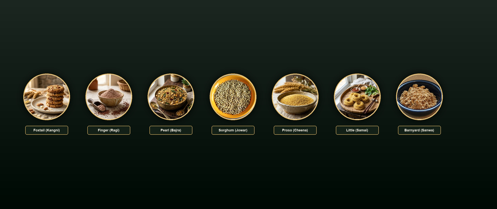
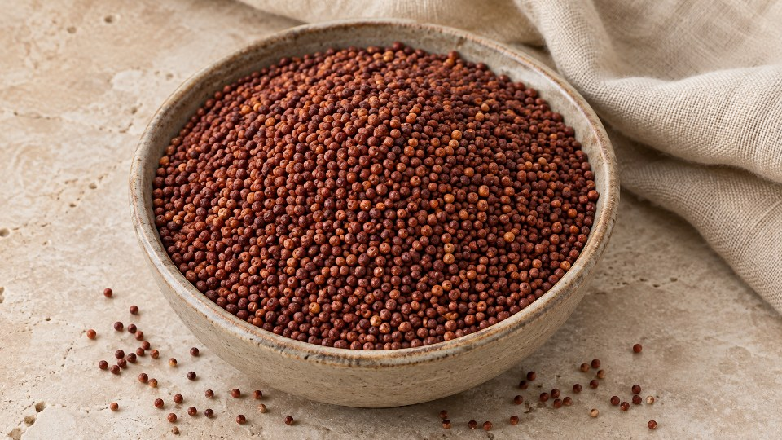
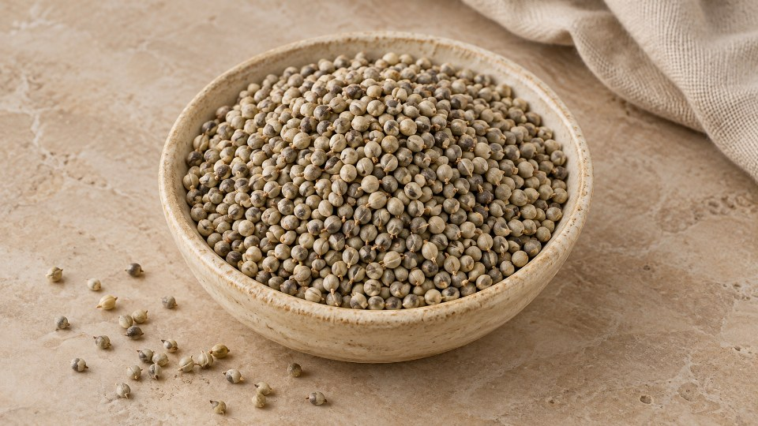
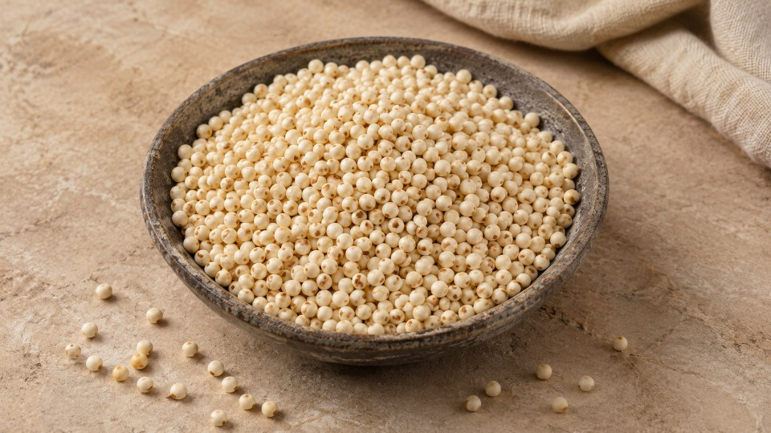
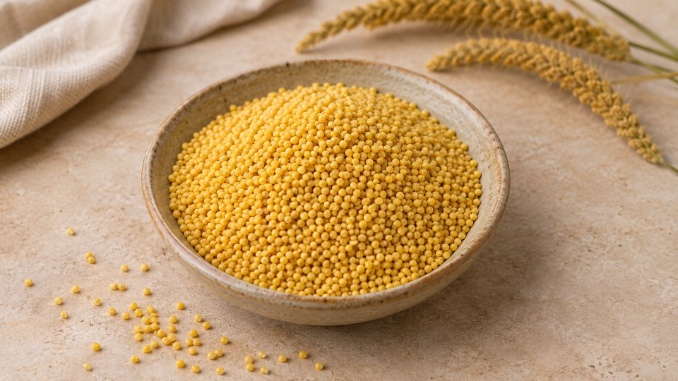
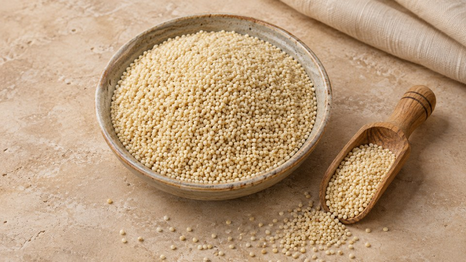
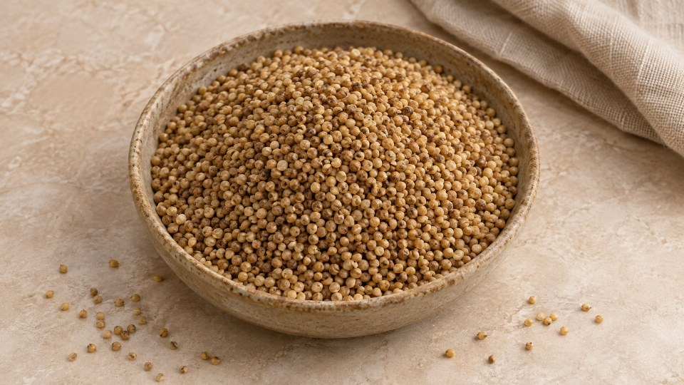
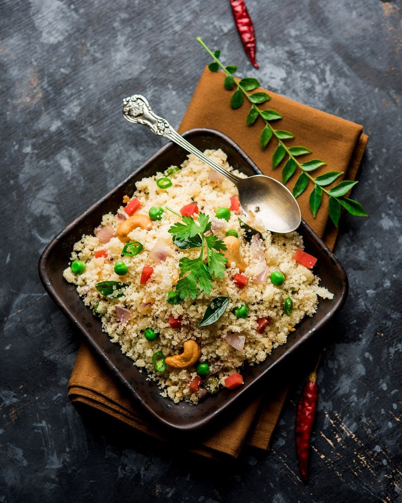

The Science of Ancient Supergrains
Millets are not a passing diet trend. Clinical research demonstrates how whole ancient millets support steady blood glucose, fortify skeletal bone mass, and nourish a resilient gut microbiome.
Explore the Six Supergrain Varieties
Each millet variety delivers a unique botanical identity, culinary texture, and micronutrient profile.


Finger Millet (Ragi / Nachni)
Contains an astounding 344mg of calcium per 100g—more than thirty times that of white rice. Essential for bone growth and osteoporosis prevention.

Pearl Millet (Bajra)
Rich in bioavailable dietary iron (8.0mg) and phosphorus. Helps combat fatigue, boosts cellular oxygenation, and provides lasting energy for active lifestyles.

Sorghum (Jowar)
Rich in anthocyanin polyphenols and prebiotic fibers. Supports healthy arterial flexibility, optimal lipid profiles, and smooth intestinal transit.

Foxtail Millet (Kangni)
Loaded with thiamine (Vitamin B1) and essential amino acids. Regulates nervous system neurotransmitters and helps stabilize daily glycemic response.

Little Millet (Samai)
Highest iron concentration among small millets (9.3mg). Extremely gentle on sensitive digestive tracts, cooking tender in under 12 minutes.

Kodo Millet (Varagu)
Revered by diabetologists for high amylose resistant starches that prevent postprandial glucose spikes and promote beneficial gut flora.
Millets vs. White Rice & Refined Wheat
See the numbers side by side per 100g raw edible portion based on National Institute of Nutrition (NIN) verified biochemical benchmarks.
| Grain Variety | Dietary Fiber | Calcium (mg) | Iron (mg) | Protein (g) | Glycemic Index (GI) |
|---|---|---|---|---|---|
| Finger Millet (Ragi) | 11.5 g | 344 mg | 3.9 mg | 7.3 g | 51 (Low) |
| Pearl Millet (Bajra) | 11.3 g | 42 mg | 8.0 mg | 11.6 g | 54 (Low) |
| Foxtail Millet (Kangni) | 8.0 g | 31 mg | 2.8 mg | 12.3 g | 50 (Low) |
| Kodo Millet (Varagu) | 9.0 g | 27 mg | 1.7 mg | 8.3 g | 48 (Low) |
| Polished White Rice | 0.2 g | 10 mg | 0.7 mg | 6.8 g | 73 (High) |
| Refined Wheat Flour (Maida) | 1.2 g | 18 mg | 1.5 mg | 10.3 g | 75 (High) |
Five Transformative Health Outcomes
Consistent incorporation of millets into your weekly meals promotes systemic, measurable wellness.
Steady Metabolic Control
High linear amylose starches digest slowly, eliminating the sharp insulin spikes common after refined wheat or white rice consumption.
Digestive Comfort & Flora
Soluble and insoluble prebiotic plant fibers nourish probiotic bacteria, improving bowel transit and soothing irritable gut symptoms.
Cardiovascular Support
Rich in magnesium and phytosterols that help maintain healthy vascular tone, support arterial relaxation, and balance lipid ratios.
Prolonged Energy Satiety
Because millets stay in the stomach longer, you stay naturally satisfied for 3 to 4 hours without sluggish brain fog or sugar crashes.
Bone Mineral Density
Finger millet (Ragi) provides more bioavailable non-dairy calcium than milk per equal calorie basis, protecting skeletal integrity.
Cellular Oxygenation
Pearl and little millets pack substantial iron and copper, driving healthy red blood cell synthesis to combat everyday chronic lethargy.

Simple Swaps for Every Meal of the Day
You do not need to overhaul your cooking habits overnight. Start with one simple grain swap a day:
Morning: Sprouted Ragi Malt or Multi-Millet Dosa
Whisk sprouted ragi flour into warm milk or water with honey for a 3-minute drink, or pour a multi-millet batter pancake.
Lunch: Fluffy Foxtail or Proso Grain Pilaf
Substitute white rice 1:1 with rinsed foxtail millet. Simmer with water (1:2 ratio) for 15 minutes. Fluff with a fork.
Teatime: Roasted Pearl Bajra Chivda or Almond Cookies
Skip deep-fried chips. Enjoy roasted pearl millet flakes or baked foxtail cookies for clean afternoon fuel.
Dinner: Light Little Millet Noodles or Sorghum Rotis
Toss air-dried noodles with stir-fried greens, or roll tender cold-milled jowar flatbreads with lentil dal.
Frequently Asked Nutrition Questions
Separating scientific facts from common kitchen misconceptions.
Start Your Health Journey with AuraMillet
Ready to taste the difference? Try our stoneground sprouted flours, wholesome cookies, and roasted snacks today with our 100% Satisfaction Guarantee.